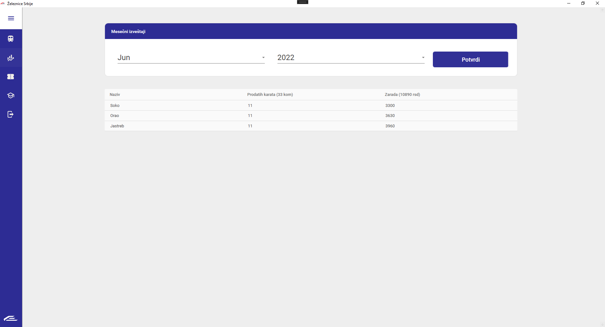

Izveštaji
Izveštaji sistema za upravljanjem železnice mogu se naći na navigacijom do stranice 'Izveštaji'.
Ona ima sledeći izgled.

Izveštaji su dati na osnovu mesečnog nivoa.
Možete izabrati za koji mesec i za koju godinu želite da Vam se prikažu izveštaji.
Nakon pritiska na dugme 'Potvrdi' prikazaće Vam se tabela u kojoj će za svaki voz pisati
koliko je zaradio u toku datog meseca i date godine. U imenama kolona pisaće ukupna zarađena suma
kao i ukupan broj prodatih karata.